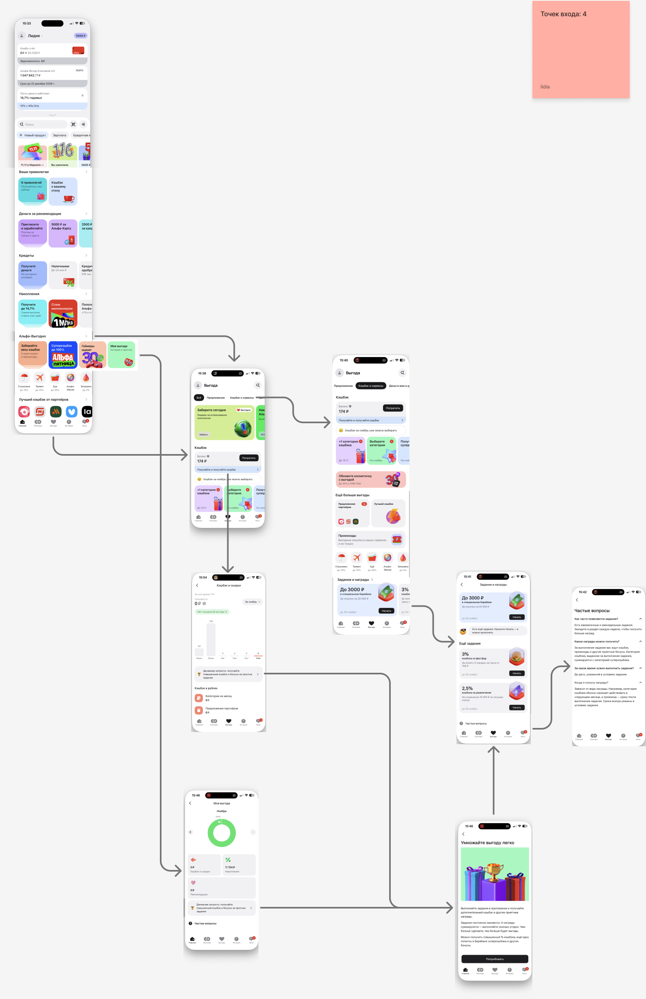
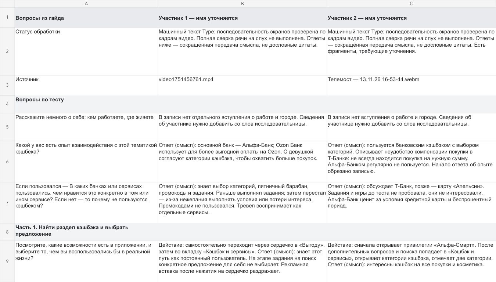
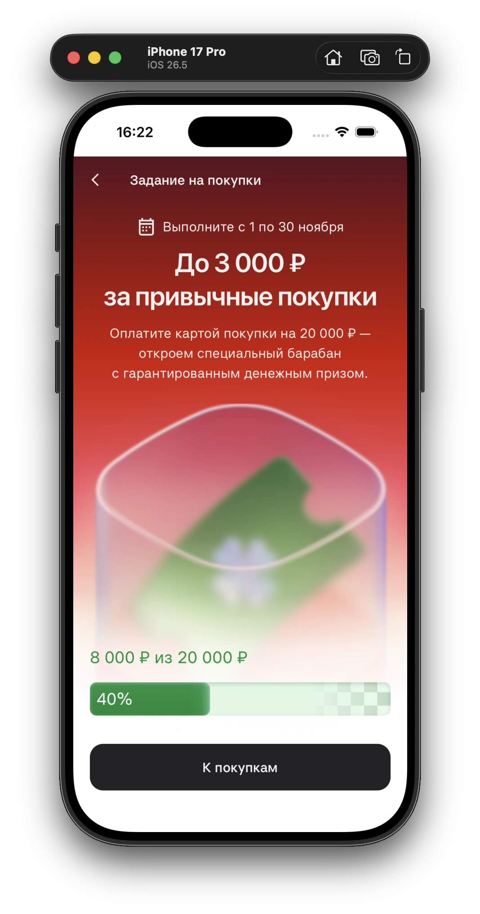

Задача и контекст
Разработать решение, которое поможет вовлечь пользователей в дополнительные механики программы лояльности и будет способствовать увеличению количества транзакций у партнёров банка.
В фокусе — «Задания и награды»: поиск раздела, понимание условий, начало участия, получение и использование награды. Отдельный партнёрский кэшбэк и игра «100 секунд» в исследование не входят.
Это независимый учебный проект. Увеличение вовлечения и транзакций — цель из брифа, а не измеренный результат.
Открытое исследование
Я собрала пользовательские истории о заданиях и играх, отделила трудности поиска и понимания условий от технических сбоев и случаев вне фокуса.
Из 26 историй пять относятся к поиску раздела или задания, 21 — к непонятным условиям, включая смешанные случаи. В исходном архиве было 43 истории; пять историй игры «100 секунд» исключены.
Это разбор конкретных свидетельств, а не оценка распространённости проблем среди клиентов. Полный объём всех просмотренных отзывов не фиксировался.
Скринфлоу
Я выделила четыре точки входа и проследила переходы от каждой из них к разделу «Задания и награды».

Полный скринфлоу

UX-аудит
Я разобрала исходные экраны: список заданий, условия участия, состояние после начала и ответы на частые вопросы. На скриншотах сохранены мои пометки.

UX-тест существующего интерфейса
В тесте участвовали пять человек. Они рассмотрели четыре задания: я наблюдала за самостоятельным поиском раздела, чтением условий и началом участия.
Три теста обработаны по записям, два восстановлены по воспоминаниям. Объём помощи модератора различался; самостоятельные действия проверены не во всех случаях.

Что показали тесты
Пользователи пропускают раздел «Задания и награды»
«Задания и награды» легко пропустить в конце страницы, но двигать весь раздел выше я не стала бы: другие предложения выглядят полезнее для бизнеса и интереснее для пользователей, поэтому хочу проверить дополнительную точку входа, а не перенос раздела.
Пользователи не понимают, как выполнить задание и получить награду
Участники понимали общий смысл заданий, но упускали условия и сомневались, поэтому я хочу показать понятную последовательность: как начать, что сделать, до какого числа и какую награду получить.
Пользователи сомневаются, началось ли задание
Человек уже потратил время на поиск раздела и изучение условий, поэтому после «Начать» интерфейс должен явно подтвердить участие, показать следующий шаг и эмоционально наградить его за эти усилия.
Пользователи не понимают, какие покупки засчитаются в задании
Термин «MCC-исключения» участникам ничего не объяснил, а разобраться через большой PDF на телефоне сложно, поэтому я хочу показать понятные примеры подходящих покупок, сохранив доступ к полным условиям.
Пользователи не знают, где искать награду за выполненное задание
По найденным скриншотам «Мои награды» появляются только после первой награды, а участники представляли её расположение по-разному, поэтому я хочу сразу показывать задания и награды рядом, а до первой награды — объяснять в пустом состоянии, что здесь появится и как это получить.
Пользователям нужно объяснить, как использовать награду
После разбора правил стало понятно, что нужно объяснить весь путь: где выбрать и при необходимости подтвердить полученную категорию кэшбэка, когда она действует и за какие покупки начислят кэшбэк.
Небольшое качественное исследование помогло выделить затруднения. Эффект будущих решений на участие и транзакции ещё не установлен.
Бенчмаркинг
Я разобрала примеры заданий, игр и наград в других продуктах: точки входа, условия участия, получение и использование награды. Смотрела и на визуальные решения, и на формулировки.


В примерах встречаются пошаговые инструкции, разделение заданий и наград, отклик на достижения и совместные задания с партнёрами. Архив акций показывает пропущенные предложения; влияние FOMO на возвращение остаётся гипотезой.
Бенчмаркинг показывает подходы в других интерфейсах, но не доказывает, что они увеличат мотивацию или покупки.
Открыть разбор в Figma ↗Гипотезы решений и ICE
В текущую проверку выбраны две гипотезы. Оценивала создание и проверку учебного прототипа, а не внедрение в банке. ICE — произведение Impact, Confidence и Ease; оценки отражают предположения.
Показать подходящие прошлые покупки
Если добавить в карточку задания плашку с подходящими прошлыми покупками пользователя, это повысит конверсию из просмотра карточки в начало задания: знакомые примеры помогут понять условия и увидеть, что участие не потребует сильно менять привычки.
Прошлые покупки — примеры, а не обещание зачесть их задним числом.
Анонсировать будущие задания
Если заменить баннер «Награды близко» анонсом заданий и коллабораций следующего месяца, пользователи будут лучше замечать и запоминать будущие предложения. Предполагаемая причина — страх упустить интересное задание и награду.
17 ноября эта гипотеза заменила вариант о прошедших акциях.
«Задания» и «Мои награды»
Две вкладки делают путь «выполнить задание → получить награду» явным. До первой награды — доступное пустое состояние с объяснением. Решение отмечено в материалах проекта как реализованное; эффект ещё не проверен.
Направления дальнейшего дизайна
Баннер рядом с картами и вкладами и переходы из подходящих операций в истории сохранены для дальнейшей работы. Они исключены из текущей проверки учебного проекта; прежние ICE 30 и 15 не входят в текущий приоритет.
Переносить весь раздел выше не выбрано. Логика подбора заданий банком и доступность состава корзины пока не установлены.
Прототип в работе
Я собираю интерактивный прототип: один набор веб-экранов запускается в браузере и в оболочке WKWebView в симуляторе iPhone.
На текущем этапе восстановлены базовые экраны и переходы: главная → выгода → задания и награды → карточка задания. Основа — предоставленные веб-архивы с исходными стилями и ресурсами.
Это промежуточное состояние, а не готовый редизайн. Скриншот из симулятора показывает текущую карточку задания. Публичная версия самого прототипа ещё не опубликована.
Контекст и границы прототипа ↗
Как буду проверять решения
Понятность условий и начало задания
Проверю, помогают ли примеры покупок объяснить условия без подсказок и начать участие. Для вывода о росте конверсии нужен сопоставимый исходный вариант.
Запоминаемость анонса
Предложу изучить страницу без указания на баннер, затем спрошу, что запомнилось. Отдельно отмечу самостоятельное воспоминание, ответ после подсказки и понимание даты старта.
Короткий UX-тест не подтвердит возвращаемость, дополнительные покупки или прибыль. Для этих выводов нужны наблюдение во времени и продуктовые данные.
Материалы и полный контекст
Ниже — подробные заметки, на которых построен кейс. Исходные ссылки, цитаты и ограничения сохранены в репозитории.
Подробные выводы и контекст UX-тестов
В тесте участвовали пять человек: они рассмотрели четыре задания, но самостоятельный поиск раздела, чтение условий и начало участия проходили с разными затруднениями.
Ответы участников и наблюдения по тестам.
Пользователи пропускают раздел «Задания и награды»
«Задания и награды» легко пропустить в конце страницы, но двигать весь раздел выше я не стала бы: другие предложения выглядят полезнее для бизнеса и интереснее для пользователей, поэтому хочу проверить дополнительную точку входа, а не перенос раздела.
Пользователи не понимают, как выполнить задание и получить награду
Участники понимали общий смысл заданий, но упускали условия и сомневались, поэтому я хочу показать понятную последовательность: как начать, что сделать, до какого числа и какую награду получить.
Пользователи сомневаются, началось ли задание
Человек уже потратил время на поиск раздела и изучение условий, поэтому после «Начать» интерфейс должен явно подтвердить участие, показать следующий шаг и эмоционально наградить его за эти усилия.
Пользователи не понимают, какие покупки засчитаются в задании
Термин «MCC-исключения» участникам ничего не объяснил, а разобраться через большой PDF на телефоне сложно, поэтому я хочу показать понятные примеры подходящих покупок, сохранив доступ к полным условиям.
Пользователи не знают, где искать награду за выполненное задание
По найденным скриншотам «Мои награды» появляются только после первой награды, а участники представляли её расположение по-разному, поэтому я хочу сразу показывать задания и награды рядом, а до первой награды — объяснять в пустом состоянии, что здесь появится и как это получить.
Пользователям нужно объяснить, как использовать награду
После разбора правил стало понятно, что нужно объяснить весь путь: где выбрать и при необходимости подтвердить полученную категорию кэшбэка, когда она действует и за какие покупки начислят кэшбэк.
Контекст и идеи для дальнейшей работы
Эти заметки сохраняют рассуждения исследовательницы; гипотезы решений ещё не проверены.
- Положение раздела. Владелица предполагает, что другие предложения могут быть выгоднее бизнесу и интереснее пользователям; данных о доходности и сравнительном вовлечении в тесте нет, поэтому перенос раздела наверх не выбран как готовое решение.
- Релевантность. По наблюдению владелицы, у четырёх участников предложения совпадали, у Андрея отличалось предложение с аптеками; это не устанавливает, выдаёт ли банк задания всем одинаково, по сегментам или персонально, а награда Андрея — 5% на аптеки — не означает, что ему были доступны только покупки в аптеках.
- Подбор заданий — решение отложено до проверки документов. Владелица отменила преждевременную формулировку о персонализации как направлении дальнейшего исследования: сначала установить доступную из официальных документов логику подбора, затем решить, предлагать ли гипотезу, другое решение или убрать этот пункт. Идеи предложений по привычным тратам сохранены только как обсуждавшиеся варианты, не как выбранное направление.
- Условия. В частности, Андрей не понимал, можно ли выполнить задание на сохранение кэшбэка, если в этом месяце он уже его вывел; это его сомнение, а не установленное ограничение участия.
- Начало участия. Неуверенность после реального нажатия зафиксирована у Маник; разные трактовки баннера другими участниками относятся к пониманию текста, а не к проверенному результату активации. Идея — заметно подтвердить участие, показать следующий шаг и добавить соразмерную эмоциональную обратную связь; её эффект нужно проверить.
- Подходящие покупки вместо акцента на исключениях. По уточнению владелицы, основной акцент — на понятных примерах того, какие покупки засчитываются; предложенная проверка через набор исключённых покупок отклонена. Примеры нужно сверить с правилами конкретного задания, сохранив доступ к полным ограничениям. Воспоминание о казино и переводах не принимается за проверенный состав MCC-исключений.
- Мои награды. По найденным владелицей скриншотам, раздел появляется после получения первой награды; это отдельное наблюдение при изучении интерфейса, а не результат прохождения теста. Артём и Арман ожидали награду в общей «Выгоде», Анна неуверенно предполагала расположение внутри «Заданий и наград»/слайдера; реальный поиск награды не проверялся.
- Пустое состояние. Владелица предложила два варианта второй вкладки: недоступную до первой награды или доступную с поддерживающим объяснением и переходом к заданиям; для проверки выбран второй вариант, поскольку он позволяет заранее узнать, где появится награда, а первый сохранён как обсуждавшаяся альтернатива.
Ограничения: небольшое качественное исследование, неодинаковая помощь модератора и неполная проверка самостоятельных действий; эффект решений на участие и транзакции не установлен.
Гипотезы владелицы: показать связь с прошлыми покупками
Сохранено 15.11.2026 для дальнейшего обсуждения, не как выбранное решение.
Показать на прошлых покупках пользователя, какие из них могли бы помочь выполнить конкретное задание, чтобы объяснить подходящие траты через знакомый человеку пример. Возможные места: история операций, карточка задания, главная страница рядом с картами. Пример владелицы — покупка бананов, молока и печенья; возможность определить состав корзины по данным банка не установлена, поэтому без подтверждения данных использовать магазин, сумму и категорию операции. Отличать покупки, уже засчитанные в активированное задание, от примеров покупок до активации; не обещать учёт задним числом.
Владелица отклонила предложение награждать просто за следующий привычный заказ как достаточное объяснение пользы бизнесу: дополнительный эффект такого заказа не доказан. Для других механик нужно ясно указать, какое изменение относительно обычного поведения ожидается, и искать реальные примеры с оценкой дополнительного результата.
Уточнение пути после выполнения
По обсуждению правил с владелицей 15.11.2026: в решении нужно объяснить, где выбрать и при необходимости подтвердить полученную категорию кэшбэка, когда она действует и на каких покупках ею можно воспользоваться; различать получение категории и начисление денег/баллов за покупки в ней. Это уточнение механики по документам, а не дополнительное наблюдение UX-теста.
Рассуждения о целях механики
Сохранено по просьбе владелицы; это интерпретации, не доказанные бизнес-результаты.
- Банк хочет поощрять не только оплату картой, но и хранение средств у него; прибыльность этой механики правила не подтверждают.
- механика связывает выполнение задания с возвращением в следующем месяце и дальнейшими оплатами
Выводы бенчмаркинга текстом
Я разобрала примеры заданий, игр и наград в других продуктах: как в них попасть, понять условия, пройти задание и получить приз. Смотрела не только на визуальные решения, но и на формулировки заданий и заголовков.
Главные выводы
- Точки входа. Баннеры на главной и в разделах выгоды, слайдер сервисов, блок карт, личные кабинеты и промосайты.
- Прошедшие акции. Архив показывает пропущенные предложения. Возможное влияние FOMO на возвращение — гипотеза.
- Пошаговая инструкция. Линейная последовательность объясняет участие. Понятность для разных возрастов нужно проверить.
- Отклик на достижения. Интерфейс эмоционально поддерживает достижения. Влияние на мотивацию продолжать — гипотеза.
- Совместные задания. Коллаборации связывают привычную игру с предложением партнёра. Пример — «5 букв» и «Пятёрочка».
- Задания и награды. В разобранных экранах встречается разделение заданий и наград. В одном примере сначала показан приз, затем события.
- MCC-исключения. В рассмотренном примере термин не объясняется на экране: подробности доступны по ссылке.
Это наблюдения и интерпретации по разобранным экранам. Бенчмаркинг не подтверждает влияние решений на мотивацию, участие или покупки; эти предположения требуют отдельной проверки.
Разобранные экраны
Открыть оригинальный разбор в Figma.
Черновой блок для кейса. Основа — семь итоговых жёлтых карточек в строке над разборами на странице «чистовик/сторител»; формулировки сокращены для чтения в кейсе. Перенесено 16.11.2026.
Гипотезы, метрики и план проверки
Согласовано с владелицей 16.11.2026, состав проверки уточнён 17.11.2026. Независимый учебный UX-кейс.
Оцениваем создание и проверку учебного прототипа, а не внедрение в банке. Метод из лекций FF: ICE = Impact × Confidence × Ease. Шкала 1–5: Impact — ожидаемое влияние; Confidence — уверенность в эффекте; Ease — лёгкость подготовки и проверки (5 — легче всего). Ранее согласованные баллы выставлены владелицей в обсуждении. Оценка № 3 уточнена владелицей 17.11.2026: 3 / 4 / 4. Все оценки — предположения, не измеренный эффект.
Гипотезы решений
В текущей проверке — гипотезы № 1 и № 3. № 5 — уже реализованное навигационное решение. Исходные номера сохранены. Бывшие № 2 и № 4 вынесены под приоритизацию ICE в «Выводы для дальнейшего дизайна»: они не входят в текущую проверку, поскольку их нельзя проверить в рамках учебного проекта. 17.11.2026 гипотеза № 3 о прошедших акциях заменена анонсами будущих заданий и коллабораций с сохранением FOMO как предполагаемой причины эффекта. № 5 уже реализована как навигационное решение и остаётся без оценки ICE.
№ 1. Если добавить в карточку задания плашку с подходящими прошлыми покупками пользователя, это повысит CR из просмотра карточки в начало задания, потому что знакомые примеры помогут понять условия и увидеть, что участие не потребует сильно менять привычки. ICE — 80.
№ 3. Если заменить баннер «Награды близко» на анонс заданий и коллабораций следующего месяца, пользователи будут лучше замечать и запоминать будущие предложения, потому что FOMO — страх упустить интересное задание и награду — привлечёт их внимание. ICE — 48 (Impact 3 × Confidence 4 × Ease 4).
№ 5. Если разделить страницу на две вкладки — «Задания» и «Мои награды», пользователям будет понятнее путь от точки А к точке Б: выполнить задание → получить награду, а также где искать полученную награду. Сохранено как навигационное решение без оценки ICE.
Оценка № 3
Баллы выставлены владелицей 17.11.2026 по шкале 1–5. Оцениваем создание и проверку учебного прототипа.
- Impact (влияние) — 3/5.
- Confidence (уверенность в эффекте) — 4/5.
- Ease (лёгкость подготовки и проверки) — 4/5.
- ICE = 3 × 4 × 4 = 48. Приоритет после № 1 (80); № 5 уже реализована и не оценивалась.
Выводы для дальнейшего дизайна
Бывшие гипотезы № 2 и № 4 сохранены как направления дальнейшего дизайна. Они исключены из текущей проверки: владелица не может проверить их в рамках учебного проекта. Ожидаемые эффекты не подтверждены; прежние оценки ICE приведены для сохранения контекста и не входят в текущий приоритет.
- Баннер рядом с картами и вкладами (бывшая № 2, прежний ICE — 30). Если разместить баннер заданий между карточками карт и вкладов или под ними, это повысит CTR этой точки входа, потому что пользователи заметят предложение при просмотре своих основных продуктов.
- Подходящие покупки в истории операций (бывшая № 4, прежний ICE — 15). Если отмечать в истории операций подходящие покупки и давать из них переход к заданию, это повысит CTR этой точки входа, потому что пользователь увидит возможность получать выгоду за привычные покупки.
CTR — Click-Through Rate, доля переходов: переходы / показы точки входа × 100%.
Метрики и проверка
- Для плашки № 1: CR — Conversion Rate, конверсия из просмотра карточки в начало задания (начавшие / просмотревшие × 100%). Рост требует сопоставимого исходного варианта.
- Для баннера № 3: просим участника изучить страницу без упоминания баннера и без ограничения в 5–10 секунд, затем закрываем её. Сначала спрашиваем «Что вам запомнилось на странице?». Если баннер не упомянут, спрашиваем «Помните ли что-нибудь про баннер?». Если вспомнил — «О чём он был? Что предлагал?».
- Отдельно фиксируем самостоятельное воспоминание, воспоминание после подсказки и понимание того, что задания появятся в следующем месяце. Отсутствие воспоминания не доказывает, что баннер не видели. Клики и включение напоминаний не являются обязательным критерием.
- Проверяем запоминаемость и понимание анонса. Для утверждения «лучше» нужен сопоставимый исходный вариант с баннером «Награды близко»; без сравнения фиксируем только результат нового варианта. Влияние FOMO, интерес к участию и фактическое возвращение из воспоминания не выводим; малый UX-тест не доказывает эффект на всей аудитории банка.
- Не подсказывать целевую точку входа заданием модератора. Выполнение банковского задания за месяц не подменять нажатием «Начать».
- Покупки до активации — примеры подходящих трат, не обещание зачесть их задним числом. Доступность состава корзины не установлена; примеры опирать на доступные данные операции и правила задания.
- Долгосрочная возвращаемость, реальные дополнительные траты и прибыль в коротком тесте не проверяются. Фактическое возвращение к старту будущего задания требует наблюдения во времени; короткий UX-тест его не подтверждает.
Заметки для дизайна без отдельных метрик
- Пошаговое объяснение: как начать, что сделать, до какого числа и какую награду получить. Необходимость отдельного онбординга не установлена.
- Понятные примеры подходящих покупок с доступом к полным условиям и исключениям.
- Подтверждение после «Начать»: участие активировано, следующий шаг понятен.
- Эмоциональное оформление и отклики: конкретное решение зависит от контента; «сделать эмоциональнее» не оформлено как проверяемая гипотеза.
- Объясняющая заглушка в «Моих наградах» до первой награды: что здесь появится и как это получить.
- Объяснение использования награды: где выбрать категорию кэшбэка, когда она действует и какие покупки подходят.
- Коллаборация с привычной компанией: «Потрать столько-то — получи кэшбэк в следующем месяце». Связь с игрой не предполагается.
- Для № 3: заменить существующий баннер «Награды близко» компактным анонсом «Не пропустите» о заданиях и коллаборациях следующего месяца с переходом в дайджест. Не добавлять отдельный блок выше или ниже актуальных заданий и не размещать будущие предложения в заглушке «Моих наград»: там показывать доступные сейчас возможности. В дайджесте показывать партнёра, суть задания, награду и дату старта, если они определены. Придуманные коллаборации в учебном прототипе не выдавать за планы банка.
- Подбор заданий под привычные траты отложен до выяснения текущей логики банка.
Основания: выводы UX-тестов, бенчмаркинг, согласованные формулировки и оценки владелицы в чате. Наблюдения и исходные цитаты не изменены.
Лидия Сафразян · 2026 · Независимый учебный проект